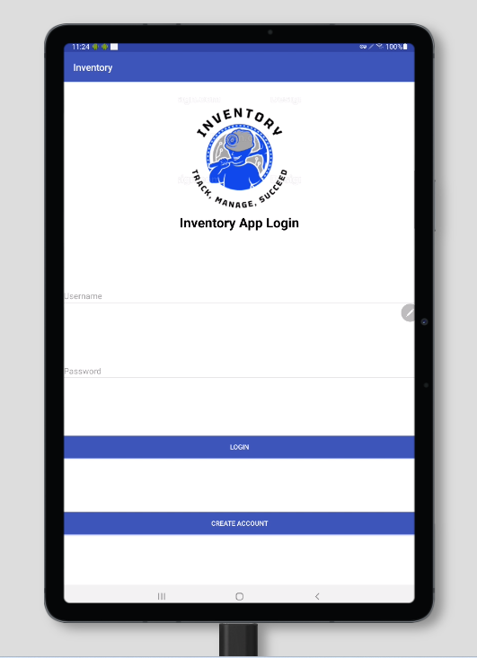
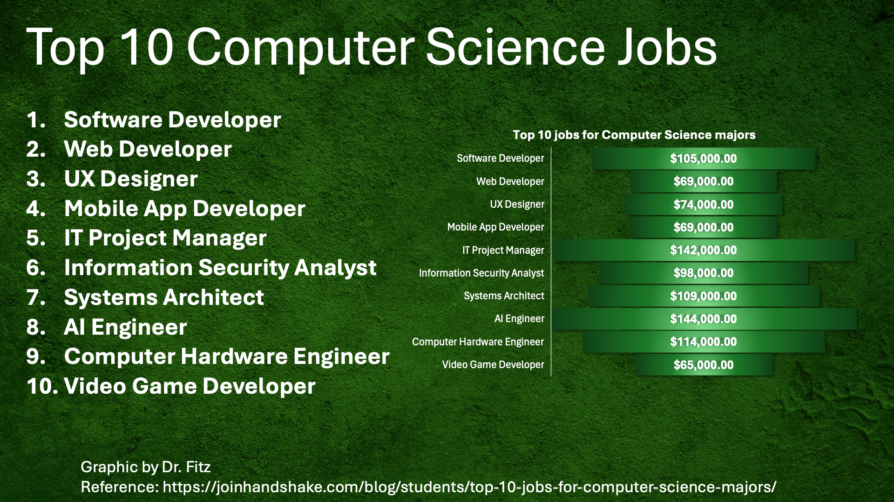

Jeff Abisa Capstone CS499
Greetings! I'm Jeff, a passionate computer science student dedicated to crafting innovative solutions through technology. This portfolio showcases my journey in software design, engineering, algorithms, data structures, and databases. Each project reflects my commitment to excellence and my aspiration to contribute meaningfully to the tech industry. Explore my work and journey as I continue to evolve and innovate in the world of computer science.

This website serves as a comprehensive portfolio of my capstone project, offering insights into various aspects of my work and the thought processes behind each enhancement. Here’s what you can explore:
- Artifacts: Detailed descriptions and links to the original and enhanced artifacts in software design, engineering, algorithms, data structures, and databases. 
- Narratives: Written narratives documenting the enhancements for each artifact, showcasing my ability to align with industry standards, best practices, and security protocols.
- Code Review: A video walkthrough of my code review process, demonstrating my coding practices, problem-solving skills, and attention to detail.
- Professional Journey: An overview of my professional development, quantifying how I achieved the course outcomes through my enhancements and reflecting on my growth as a computer scientist. 

The CS499 Capstone project has been a transformative experience, allowing me to apply theoretical knowledge to practical challenges, enhance my technical skills, and prepare for a successful career in computer science. This website not only highlights my achievements but also serves as a testament to my dedication and passion for the field.
I invite you to explore the different sections of my website by clicking in the link bellow to gain a deeper understanding of my work, my learning journey, and the skills I bring to the table. Thank you for visiting, and I hope you find my capstone project both informative and inspiring.